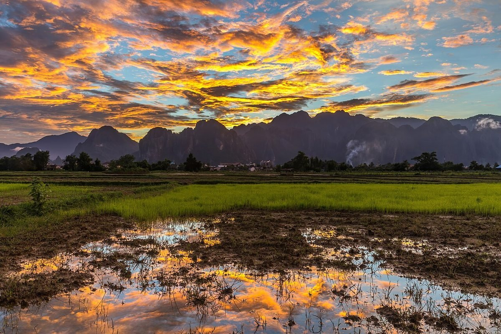
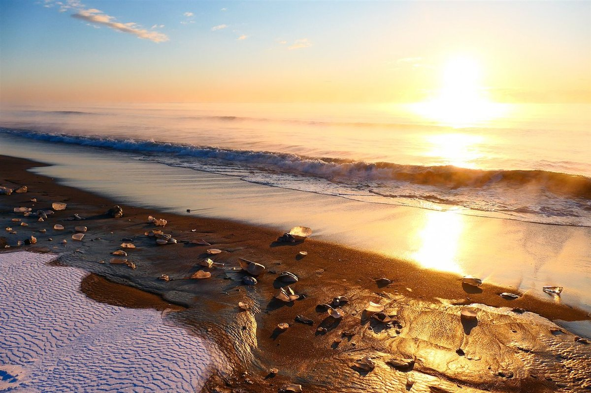
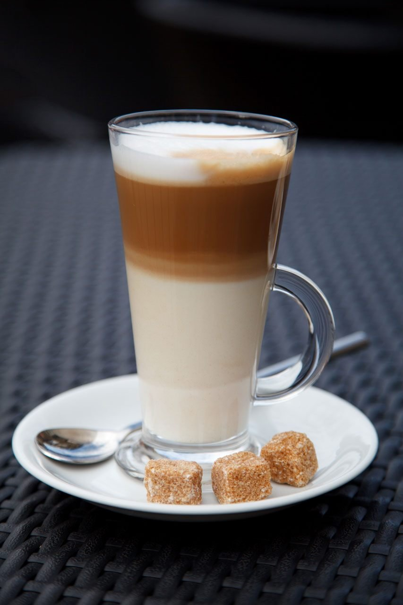
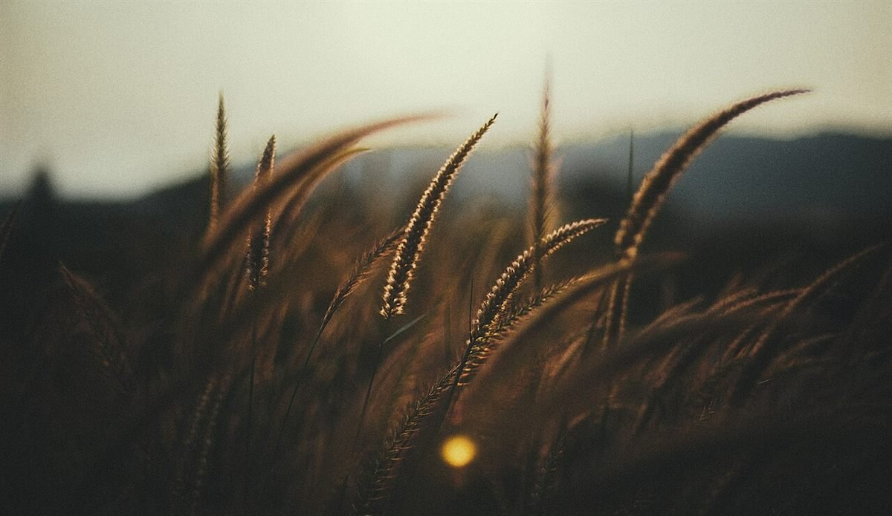
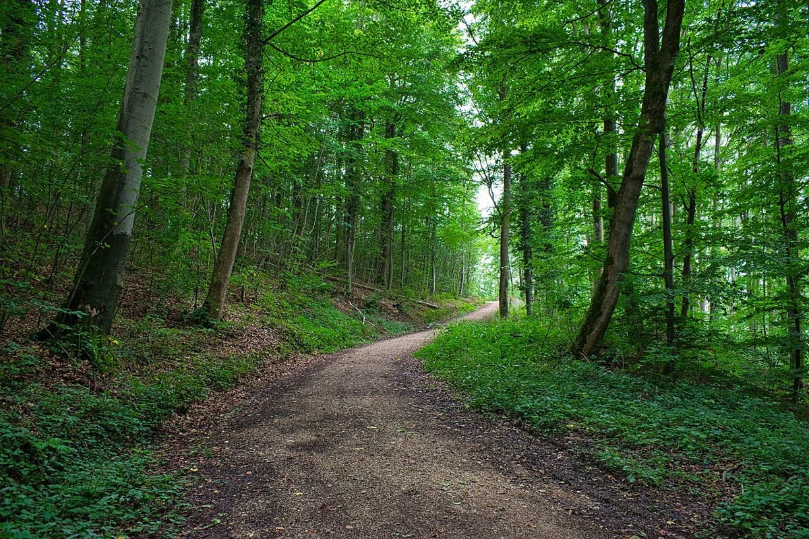
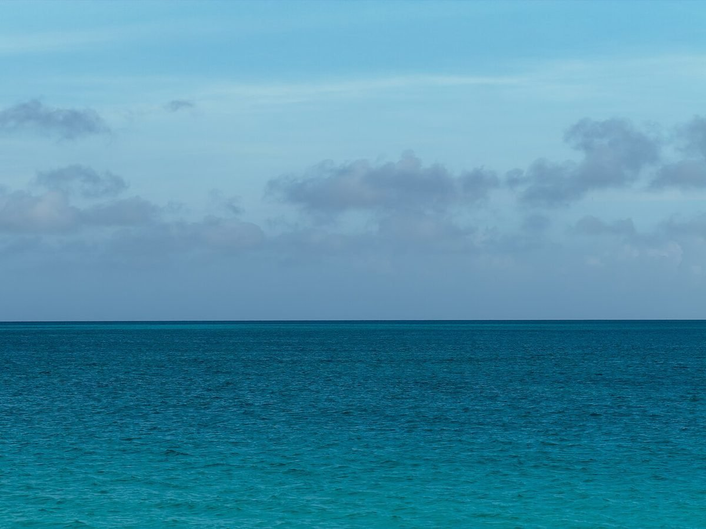
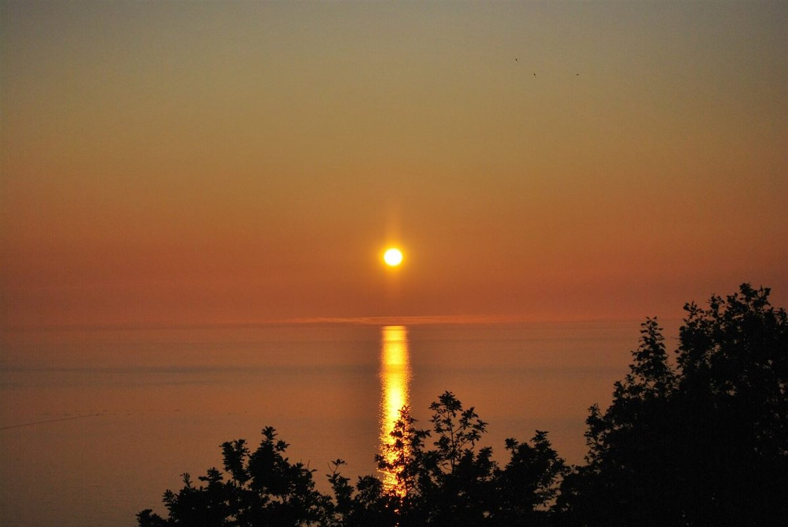
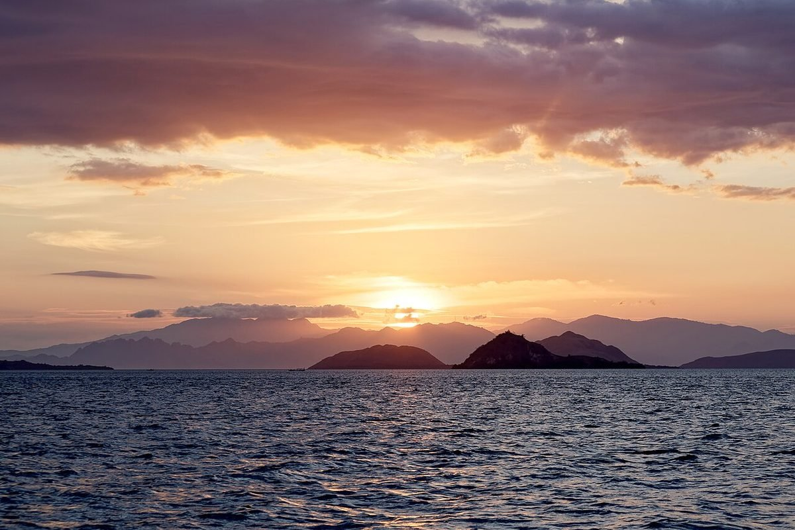

岐阜県瑞浪市のカフェ

岐阜県瑞浪市寺河戸町にあるカフェ、88cafeのご案内ページです。お店の詳しい情報は順次ご案内します。営業時間などはお気軽にお問い合わせください。

メニュー・営業時間は準備中です。ご質問は電話またはInstagramからどうぞ。
メニューを見るお店について
このページの配色やデザインは制作側の案です。お店の理念や特徴を示すものではありません。


写真はイメージです




メニューページへ
アクセスを見る